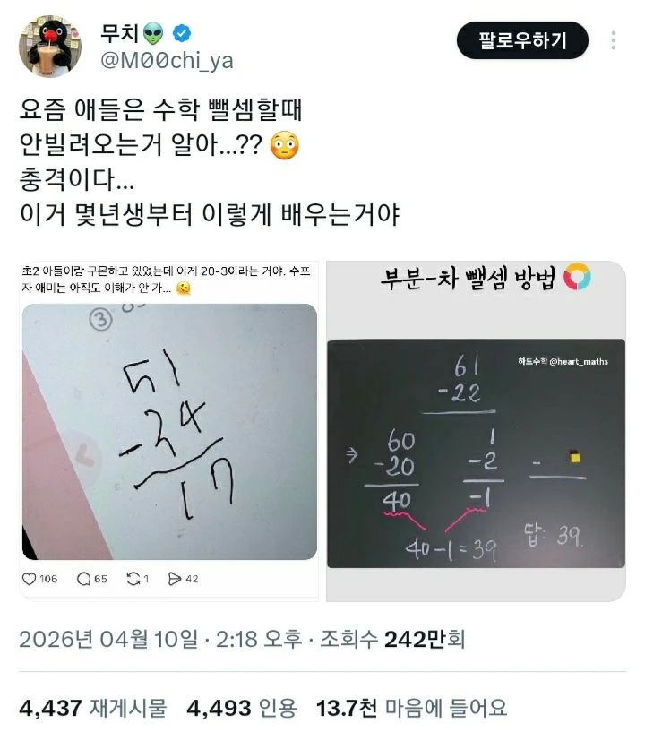
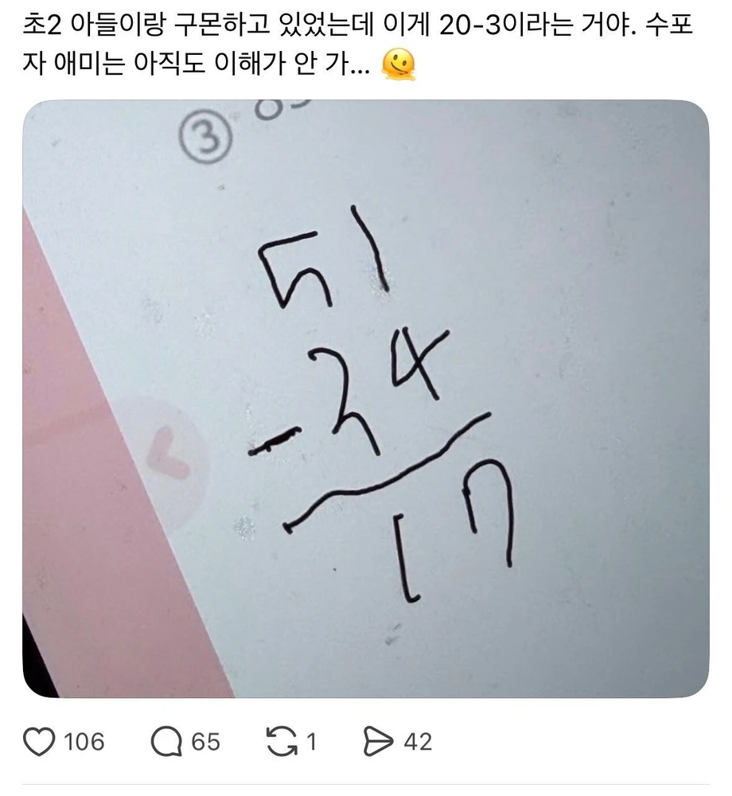
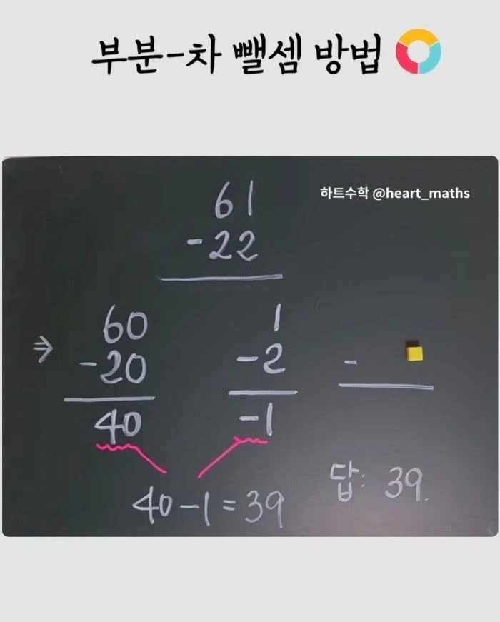

50-30=20
1-4=-3
즉 20-3=17

2022 교육과정이 개정되면서 '여러 가지 방법으로 계산하기'가 도입되었다고 함


50-30=20
1-4=-3
즉 20-3=17

2022 교육과정이 개정되면서 '여러 가지 방법으로 계산하기'가 도입되었다고 함
교육과정에 저거 없음 여러가지 방법으로 뺄셈하는건 맞는데 수학은 계열성인데 초등학교범위내에사 6학년도 음수는 안나와
이 짤 볼때마다 어이없네
받아올림 받아내림 제대로 가르치게 되어있음 수모형까지 써서
오...
난 어릴 때 멍청해서 8-3 같은건 8 위에 대가리 3이 똑 따서 가져가면 5되는 상황 상상해가면서 뺄셈 공부했던거 같은데
창의력 대장이었네
근데 그렇게 상상한다는 것만 봐도 멍청한건 아님.
암산기준으로
자리수맞춰서 한자리수 계산을 여러번하는거라
자리수애매할때는 저게더빠름
숫자보고 두방식중 맞는거씀
큰수 계산은 원래방법이 더 쉽긴하겠다
암산으로 저렇게 하곤 했는데 아예 체계화된 방법이 있었나보네..
암산할때 방법이었는데 ㅋㅋㅋㅋㅋ
겠냐? 음수라는 개념을 안 배우는데
막연히 '마이너스' 라는걸 실생활에서 접하니까
꼼수로야 습득할 수 있지만
오피셜로 할 순 없음
빌려오기라는 게
51 - 34 기준으로
1 - 4는 모자라니까
10 빌려와서 11 - 4 한다음 7
50에서 10 빌려줬으니까
남은 40 - 30 한다음 10
7 + 10 을 해서 17로 계산한다는거지?
어... 맞는데 학생 나이가...?
걍 자연스럽게 계산했던 건데
본문에서 빌려오기라는 말이
이게 맞나 싶어서..ㅋㅋㅋㅋ
어... 맞는데 학생 대학생이라면 대학원생할생각없는가...?
이런게 참 좋음 계산하는 발식이 다들 머릿속에서 다르다보니까
오....
초딩 때 음수개념 자체를 안 가르쳤던 거 같어
아녀 배우긴했을겨 자나 거리가지구 기준점 잡아서
아저씨땐 음수개념은 중딩때 온것같은데
인도식으로 알았는데? 맞나?
첫짤에 애가 푼건 맞는데 오른쪽에 유튜브 스샷같은건 틀림
나도 이렇게 계산함 ㅋㅋ
와 대박이네 나도 이제 이거써야지
빌리면 갚아야되니까 아예 저렇게 하는구나
오
세자리부터는 지옥 열리겠는데
개쩌는데?
암산 다 저렇게 하는거 아니였냐
결국엔 문제풀때 제일 빨리되는방법으로 쓸거임 걱정안해도됨 걍 공식유도랑 비슷한거지 시험에선 시간때문에 결과식만 써야하니깐